Neural Networks for Loans
Using Deep Learning to Determine Financial Risk

Using Deep Learning to Determine Financial Risk
Using data provided by the LendingClub, a peer-to-peer lending company, we sought to design a model that would analyze information known about a potential borrower and predict if this person would fully pay back their loan.
We use a subset of a LendingClub dataset available on Kaggle. This dataset contains information about the person requesting the loan, if their request was accepted or denied, and — if the request was accepted — whether the loan was paid back in full or charged off.
The dataset contains 396030 entries and is organized into 27 columns containing a mix of categorical and numeric features.
We used TensorFlow and Keras to design a deep learning neural network that was able to predict with 89% accuracy if a potential borrower would pay back their loan. Considering the unbalanced nature of dataset, which contains much almost 80% fully paid loans, this model presents a moderate level of accuracy which could potentially be approved upon with further development.
We began by performing an initial analysis of the data in order to view summary statistics, visualize the data, and gain an understanding of potentially important data features.
#Load the necessary Python libraries and frameworks
import pandas as pd
import numpy as np
import matplotlib.pyplot as plt
import seaborn as sns
%matplotlib inline
#Load the CSV file as pandas data frame object
df = pd.read_csv('../DATA/lending_club_loan_two.csv')
# Loads a CSV file containing information about each column of the dataframe.
data_info = pd.read_csv('../DATA/lending_club_info.csv',index_col='LoanStatNew')
#Creates a function that provides the description of the dataset’s columns.
def feat_info(col_name):
print(data_info.loc[col_name]['Description'])
Since we were interested in predicting loan status, we began by creating a count plot that shows how many loans were fully paid off and how many were charged off.
plt.figure(figsize=(18,6))
sns.countplot(df.loan_status)
Figure 1
Number of Loans per Loan Status
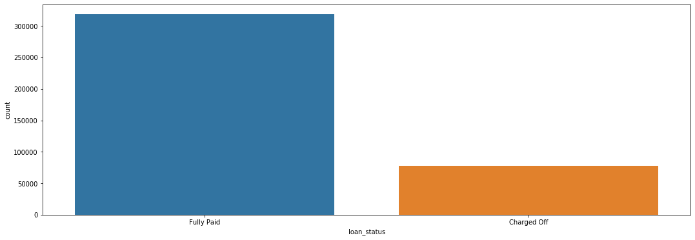There are considerably more fully paid off loans than there are charged off loans. This intuitively makes sense: we would expect defaults to be the exception. However, this meant we had an unbalanced dataset, which suggested that our predictive model would likely have a good accuracy. We would need to use precision and recall as the guiding metrics for determining our model’s strength.
Next, we created a histogram of loan sizes to see how frequent certain amounts are.
plt.figure(figsize=(18,6))
sns.distplot(df['loan_amnt'],kde=False,bins=40)
Figure 2
Number of Loans by Loan Amount
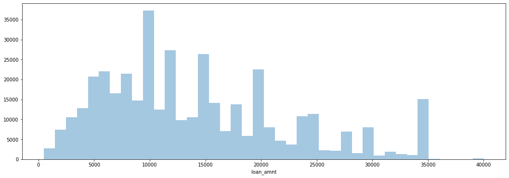We saw that there are spikes at even money amounts — $10,000, $15,000, $20,000, etc. — as opposed to random amounts. We can conclude that loans are frequently distributed in standard amounts.
We then explored the correlation between the continuous feature variables by calculating these values and plotting them as a heat map.
#cmap viridis to better visualzie the correlation.
plt.figure(figsize=(18,6))
sns.heatmap(df.corr(),annot=True,cmap='viridis')
Figure 3
Heat Map of Feature Correlations
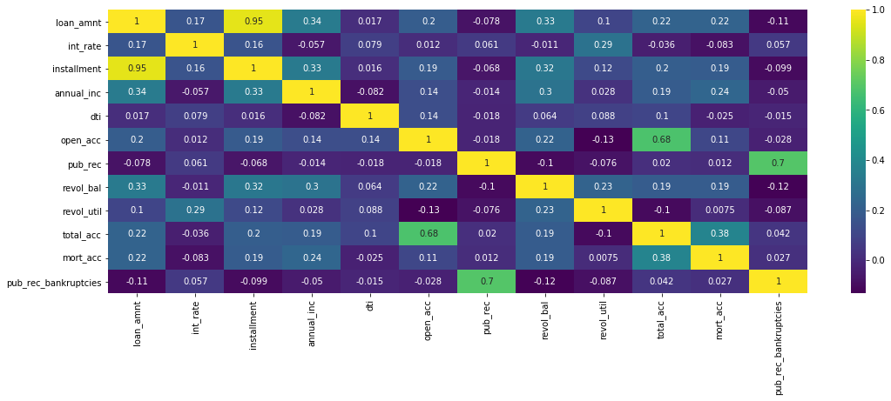We noticed an almost perfect correlation between the ‘loan_amnt’ and ‘installment’ features. We sought to further explore this relationship to determine if these feature contain duplicate information Using the feat_info function we designed at the beginning, we were able to ascertain that ‘installment’ is “The monthly payment owed by the borrower if the loan originates,” while ‘loan_amnt’ is “The listed amount of the loan applied for by the borrower.” It seemed probable that there would be a direct relationship between the loan amount and the size of monthly payment due on the loan. In order to explore this intuition, we created a scatterplot of the relation between the ‘loan_amnt’ and ‘installment’ features.
plt.figure(figsize=(15,7))
sns.scatterplot(data=df,x='installment',y='loan_amnt')
Figure 4
The Relation of Installment Size and Loan Ammount
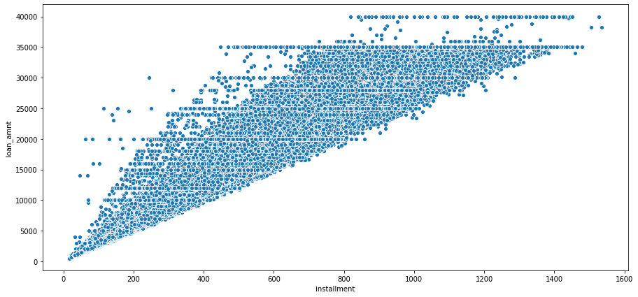Our scatterplot supports this interpretation. It makes sense that the installment size would be tied to the loan amount. We can guess that the company probably uses some kind of formula to determine the installment payment based on the loan amount.
Next, we created a box plot to explore the relation between the size of the loan and how likely it is to be fully paid or charged off.
plt.figure(figsize=(12,9))
sns.boxplot(data=df,x='loan_status',y='loan_amnt')
Figure 5
Box Plot of Loan Amount by Loan Status
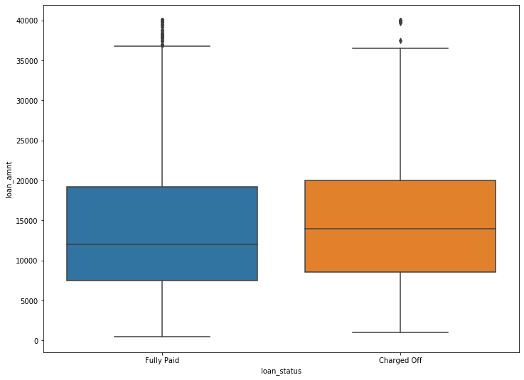The two loan statuses appear fairly similar. If loan amount is higher, there is a slightly higher chance of it being charged off. This intuitively makes sense: larger loans are harder to pay off. However, the difference between fully paid and charged off appears to be very slight. This small difference, while indicating some relationship, does not suggest that loan size is a key indicator in final loan status.
We wanted to clarify this conclusion by finding the exact figures concerning the relationship between loan status and loan amount.
df.groupby('loan_status')['loan_amnt'].describe()
Table 1
Descriptive Statistics of Loan Amount by Loan Status
| count | mean | std | min | 25% | 50% | 75% | max | |
|---|---|---|---|---|---|---|---|---|
| Charged off | 77673.0 | 15126.300967 | 8505.090557 | 1000.0 | 8525.0 | 14000.0 | 20000.0 | 40000.0 |
| Fully Paid | 318357.0 | 13866.878771 | 8302.319699 | 500.0 | 7500.0 | 12000.0 | 19225.0 | 40000.0 |
The mean loan amount for charged off loans is slightly higher the mean loan amount of fully paid off loans, although only by about $1,200. This reinforces what we saw in our box plot. A larger loan is somewhat more likely to be charged off, but loan size does not appear to be a key indicator in predicting loan status.
Our next step was to explore the grade and sub grade ratings that LendingClub attributed to the loans. Each loan could receive a possible alphabetic grade from A to G, as well as an alphanumeric sub grade from A1 to G5.
We created a count plot which showed the loan status per loan grade in order to see if there was any differentiation between them.
plt.figure(figsize=(18,6))
sns.countplot(data=df,x='grade',hue='loan_status')
Figure 6
Count of Fully Paid and Charged Off Loans per Grade Category
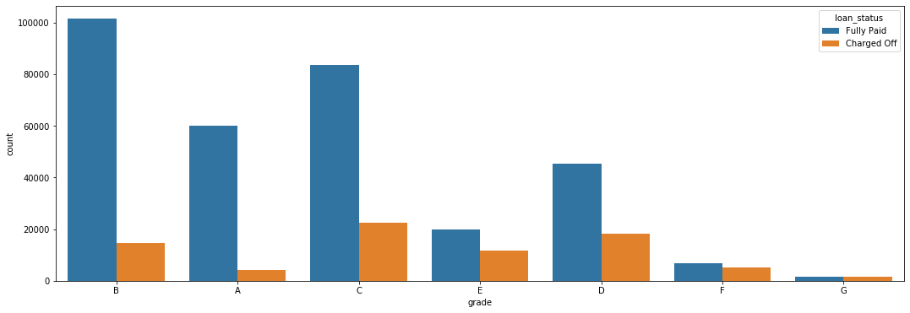This graph shows a clear between the loan grade and it’s likelihood of being charged off: as the loan grade decreases, the chances of a default increase. For example, grade G loans are essentially just as likely to be fully paid as they are to be charged off. On the other hand, only a small percentage of grade A and B loans are charged off.
To further explore this relationship, we created a similar count plot, showing the number of loans per grade, as well as another count plot which also differentiates based on loan status.
plt.figure(figsize=(18,6))
sns.countplot(data=df,x='sub_grade',palette='coolwarm',
order=['A1','A2','A3','A4','A5','B1','B2','B3','B4','B5',
'C1','C2','C3','C4','C5','D1','D2','D3','D4','D5',
'E1','E2','E3','E4','E5','F1','F2','F3','F4','F5',
'G1','G2','G3','G4','G5'])
Figure 7
Number of Loans per Loan Amount
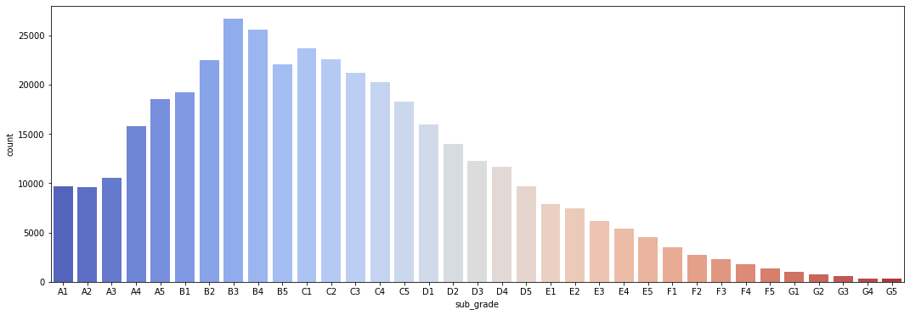
plt.figure(figsize=(18,6))
sns.countplot(data=df,x='sub_grade',palette='coolwarm',
order=['A1','A2','A3','A4','A5','B1','B2','B3','B4','B5',
'C1','C2','C3','C4','C5','D1','D2','D3','D4','D5',
'E1','E2','E3','E4','E5','F1','F2','F3','F4','F5',
'G1','G2','G3','G4','G5'],
hue='loan_status')
Figure 8
Number of Fully Paid and Charged Off Loans per Sub Grade Category
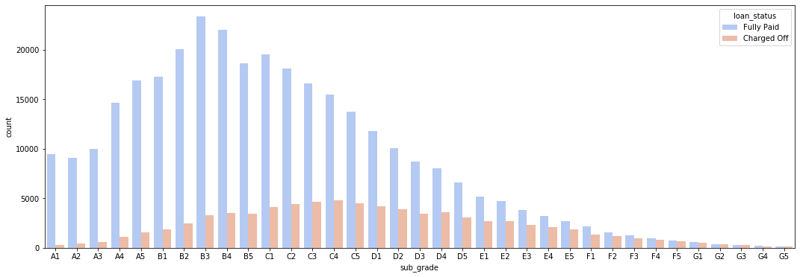Once again we saw that the lower the grade of the loan, the less likely it was to be fully paid. The F and G sub grades appear to be particularly bad, so we created another count plot that only included these sub grades. This would provide a clearer and easier to read image of the relationship between sub grade and loan status.
#We first create a subset of our main data frame.
df_fg = df[(df['grade'] == 'F') | (df['grade']== 'G')]
#Next, we plot it out.
plt.figure(figsize=(18,6))
sns.countplot(data=df_fg ,x='sub_grade',
order=['F1','F2','F3','F4','F5',
'G1','G2','G3','G4','G5'],
hue='loan_status')
Figure 9
Number of Fully Paid and Charged Off Loans per F and G Sub Grade Categories
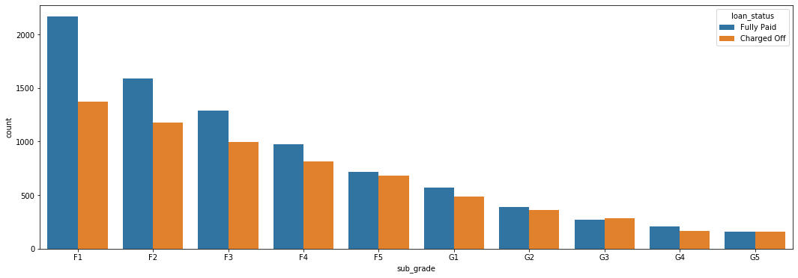This reinforces our pervious observation. This graph shows that G5 loans, the lowest sub grade, are just as likely to be fully paid as they are to be charged off.
Finally, we want to explore if there are any significant correlations between loan status and the numeric features in our data set. To do this we had to first create a new feature in data frame that converted the categorical loan status feature into a boolean value 1 for “Fully Paid” and 0 for “Charged Off”.
# We create a function that will take in the value as a string and convert it into an integer, giving us a boolean value.
def fully_paid(repaid):
if repaid == 'Fully Paid':
return 1
else:
return 0
# We apply this function to the 'loan_status' column of our data set.
df['loan_repaid'] = df['loan_status'].apply(fully_paid)
# We could have also used .map() to change values
# For example:
# df['loan_repaid'] = df['loan_status'].map({'Fully Paid':1,'Charged Off':0})
Once we had created a boolean value for our label, we were able to create a bar plot that shows the correlation of the numeric feature to loan status.
# We are sure to call .sort_values on our plot, to create a easier to read visualization.
# We are also sure to drop off the "loan_repaid" column from our plot, since there will be perfect correlation and this will distort the visualization of the plot.
plt.figure(figsize=(18,6))
df.corr()['loan_repaid'].sort_values(ascending=True)[:-1].plot.bar()
Figure 10
Correlation of Numeric Features to Fully Paid Loan Status
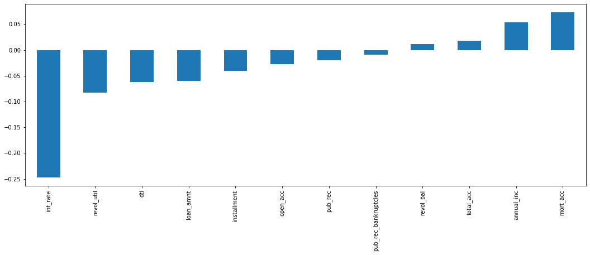We see that interest rate has the highest negative correlation with whether or not someone repays their loan. This intuitively makes sense since a higher interest rate could create a more onerous financial situation.
Having performed our initial exploratory data analysis, we moved on to preprocessing our data. In order to get the data set ready to develop a predictive model, we would need to first remove or fill in any missing data, remove unnecessary or repetitive features, and finally convert categorical string features into dummy variables.
Our first step in handling missing data was to determine how much data was actually missing. We created a series that displayed the total count of missing values per column.
ser_null = df.isnull().sum()
ser_null
Table 2
Data Frame Columns With Missng Values
| Column Title | Missing Values |
|---|---|
| emp_title | 22927 |
| emp_length | 18301 |
| title | 1755 |
| revol_util | 276 |
| mort_acc | 37795 |
| pub_rec_bankruptcies | 535 |
We saw that the ‘emp_title’, ‘emp_length’, ‘title’, ‘revol_util’, ‘mort_acc’, and ‘pub_rec_bankruptcies’ columns were all missing some data. To better understand how much data was missing, we calculated the percentage missing for each feature.
ser_null.apply(lambda n: (n/ 396030)*100)
Table 3
Data Frame Columns With Missng Values as a Percentage
| Column Title | Missing Values |
|---|---|
| emp_title | 5.789208 |
| emp_length | 4.621115 |
| title | 0.443148 |
| revol_util | 0.069692 |
| mort_acc | 9.543469 |
| pub_rec_bankruptcies | 0.135091 |
We saw that ’emp_title’, ’emp_length’, and ’mort_acc’ were the most significant columns with missing data. In particular, 'mort_acc' stood out with almost 10% of rows missing this information. Others were less significant, for example ’revol_util’ and ‘pub_rec_bankruptcies’: these rows could be dropped without worrying about affecting our data set. We began working through the list from top to bottom in order to address the missing data.
The column ‘emp_title’ provides “the job title supplied by the Borrower when applying for the loan.” Our first step was to determine how many unique employment titles there were. This would help us decide if we should drop this feature or fill it in with some other value.
df['emp_title'].nunique()
We found that there were 173,105 unique employment titles in our data set, meaning almost half of the entries in our dataset had a unique job title. There are too many unique entries to covert this into a dummy variable feature. Since we would be unable to use this column in our predictive model, we decided to drop it from our data frame.
df.drop('emp_title',axis=1,inplace=True)
Next, we turned our attention towards the ‘emp_length’ feature, which provides “Employment length in years. Possible values are between 0 and 10 where 0 means less than one year and 10 means ten or more years.” We began by creating a count plot of the ‘emp_length’ categories.
plt.tight_layout()
plt.figure(figsize=(18,6))
sns.countplot(data=df, x='emp_length',
order=['< 1 year','1 year','2 years','3 years','4 years',
'5 years','6 years','7 years','8 years','9 years',
'10+ years'])
Figure 11
Total Number of Loans per Employment Length Category
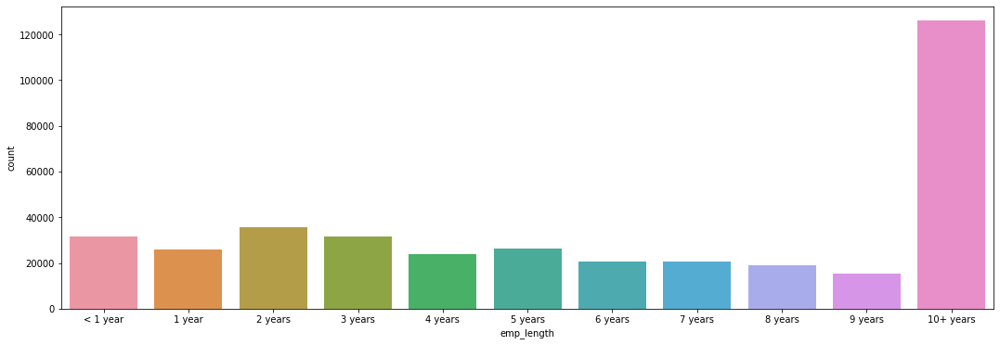This graph shows that the 10+ years employment length group is the largest. This makes sense since if we assume that those who hav been working for a longer amount of time are more likely to have the financial means to take out a loan. Because of their personal situation, they may also be more likely to need to take out a loan (e.g. to pay for home repair).
In order to determine if employment length was an important feature, we decided to to verify if this feature had a relationship with loan status.
plt.tight_layout()
plt.figure(figsize=(18,6))
sns.countplot(data=df, x='emp_length',
order=['< 1 year','1 year','2 years','3 years','4 years',
'5 years','6 years','7 years','8 years','9 years',
'10+ years'],
hue='loan_status')
Figure 12
Number of Fully Paid and Charged Off Loans per Employment Length Category
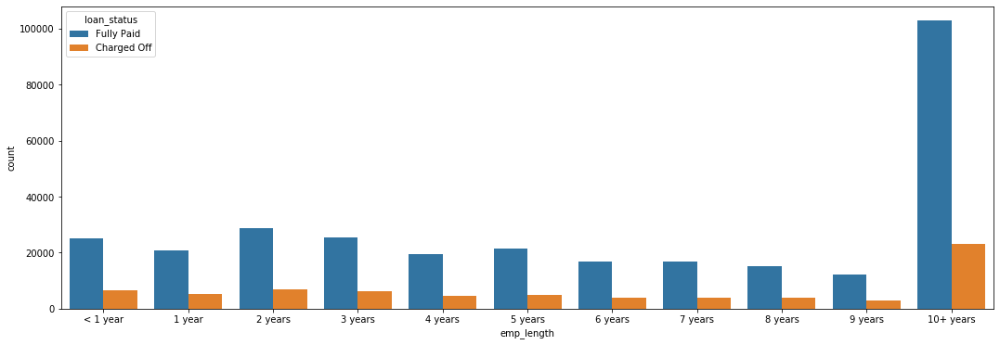Based off this plot, it is difficult to judge if there is any significant relationship between loan status and employment length. We therefore decided to calculate the percent of charged off loans per employment length category.
We created two data frames, one for those who paid off their loans and one for those who charged them off. We then used these two data frames to determine the ratio of persons who charged off versus those who fully paid.
fully_paid = df[df['loan_repaid'] == 1]['emp_length'].value_counts(ascending=True)
defaulted = df[df['loan_repaid'] == 0]['emp_length'].value_counts(ascending=True)
defaulted/fully_paid
Table 4
Ratio of Charged Off Loans per Employment Length Category
| Length of Employment | Ratio |
|---|---|
| 1 year | 0.248649 |
| 10+ years | 0.225770 |
| 2 years | 0.239560 |
| 3 years | 0.242593 |
| 4 years | 0.238213 |
| 5 years | 0.237911 |
| 6 years | 0.233341 |
| 7 years | 0.241887 |
| 8 years | 0.249625 |
| 9 years | 0.250735 |
| < 1 year | 0.260830 |
We also calculated what percent of loans for each category were charged off.
defaulted/(defaulted+fully_paid)
Table 5
Percent of Charged Off Loans per Employment Length Category
| Length of Employment | Ratio |
|---|---|
| 1 year | 0.199135 |
| 10+ years | 0.184186 |
| 2 years | 0.193262 |
| 3 years | 0.195231 |
| 4 years | 0.192385 |
| 5 years | 0.192187 |
| 6 years | 0.189194 |
| 7 years | 0.194774 |
| 8 years | 0.199760 |
| 9 years | 0.200470 |
| < 1 year | 0.206872 |
We observed across the extremes that there is little variation from one group to the next. For any given category, there is between an 18 and 20 % chance that the loan will be charged off. There does not appear to be any significant relationship between length of employment and the final status of a loan. To further verify this, we can plot these percentages in a bar graph.
length_percentages = defaulted/(defaulted+fully_paid)
plt.figure(figsize=(18,6))
length_percentages.plot(kind='bar')
Figure 13
Percentage of Charged Off Loans per Employment Length Category
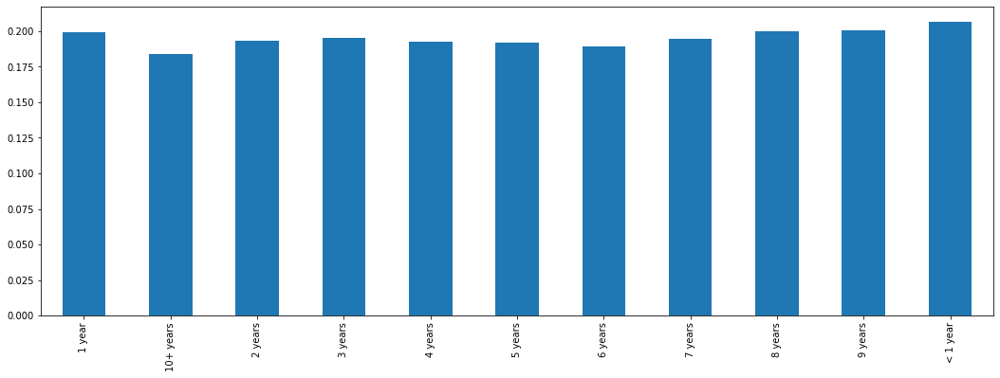In this graph we can clearly observe that there is only minimal variation between categories. This is somewhat surprising. Those who have worked more than 10 years have a slightly smaller charge off rate. However, the difference is not extreme enough to support keeping this feature. Therefore, because rates are so similar across all employment lengths, we decided to drop this feature.
df.drop('emp_length',axis=1,inplace=True)
Next, we examined the ’title’ column of data frame in order to see what kind of information it was providing.
df['title'].head(10)
It looked like this was giving information to what we might see in the ‘purpose’ column, so we checked this column to see if there might be duplicate information.
df['purpose'].head(10)
Our intuition proved to be right. These two columns provided essentially the same information. Because it is missing information and is essentially a duplicate of ‘purpose’ we dropped the ‘title’ column from our data frame.
df.drop('title',axis=1,inplace=True)
We then turned our attention to ‘mort_acc’ column, which had initially stood out to us because 10% of this data is missing. This column shows how many mortgage accounts each person has. We performed a value count on this column to get a better idea of what it looked like.
df['mort_acc'].value_counts()
We saw that the majority of people have 0 montage accounts. While there are extremes in this column (one individual with 34 montage accounts!), we decided that we could keep them without skewing our data.
This column had a very high amount of missing values — almost 10% of the column. This meant we couldn’t drop those rows or else we would be dropping 10% of our data. We considered therefore dropping the feature. However, the number of mortgage accounts seemed intuitively significant to our label of loan status. Moreover, since we were dealing with a numeric feature and only 10% of data was missing, it would be possible to fill in the missing data with estimate values. We decided to peruse this option; it would turn out to be one of the most technically challenging aspects of the whole project.
To fill in them missing values in the ‘mort_acc’ column, we began by looking at what features it was the most correlated with and find that a strong correlation with ‘total_acc,’ which stands for the total amount of accounts the person holds. This makes sense: the number of total accounts should be directly related to the number of mortgage accounts.
df.corr()['mort_acc'].sort_values(ascending=True)
Table 8
Correlation between Number of Mortage Accounts and Numeric Features
| Feature | Correlation |
|---|---|
| int_rate | -0.082583 |
| dti | -0.025439 |
| revol_util | 0.007514 |
| pub_rec | 0.011552 |
| pub_rec_bankruptcies | 0.027239 |
| loan_repaid | 0.073111 |
| open_acc | 0.109205 |
| installment | 0.193694 |
| revol_bal | 0.194925 |
| loan_amnt | 0.222315 |
| annual_inc | 0.236320 |
| total_acc | 0.381072 |
| mort_acc | 1.000000 |
To begin filling in the missing data, we grouped persons by total accounts and found the mean amount of mortgage accounts for each category. This provided us with an average that we could use to fill in the missing values. Once we had the mean mortgage account amount per total account amount, we created a function that would check to see if a row was missing a montage account value. If it did, it would find the mean mortgage account value for its total account value and then use this value to fill in the missing data. If the row already had a ‘mort_acc’ value, the function did nothing. After designing and testing our function to make sure it worked properly, we used a lambda expression to apply it to the two columns of our dataframe. This worked correctly, and we were able to fill in reasonable estimate values for about 10% of rows that were missing this data.
total_acc_avg = df.groupby('total_acc').mean()['mort_acc']
from math import isnan
def fill_mort_acc(total_acc,mort_acc):
if np.isnan(mort_acc):
return total_acc_avg[total_acc]
else:
return mort_acc
#With help from https://stackoverflow.com/questions/13331698/how-to-apply-a-function-to-two-columns-of-pandas-dataframe
df['mort_acc'] = df.apply(lambda x: fill_mort_acc(x['total_acc'], x['mort_acc']), axis=1)
At this point, ‘revol_util’ and ‘pub_rec_bankruptcies’ were the only remaining columns with missing data. However, since these entries constituted less than 0.5% of the total, we decided to simply remove the rows who were missing this data.
df = df.dropna()
We completed cleaning up the missing data and could deal with the columns containing categorical variables. These would need to be converted into dummy variables, continuous numeric variables, or, if neither of these were possible, removed from the data frame. Our first step was to list what columns contained categorical data.
list(df.select_dtypes(include=['object']).columns)
This indicated the following columns contained categorical data: 'term','grade', 'sub_grade', 'home_ownership', 'verification_status', 'issue_d', 'loan_status', 'purpose', 'earliest_cr_line', 'initial_list_status', 'application_type', and'address'
We began by looking at the ‘term’ feature and learned that this column shows the number of payments on the loan, which are listed as a string value of either ’36 months’ or ’60 months’. This was essentially already numeric data and we could easily convert this into a numeric variable: ’36 months’ would be become the integer 36, while ’60 months’ would become the integer 60. We made this change through the use of the .map() function.
df['term'] = df['term'].map({' 36 months':36,' 60 months':60})
Our next task was to handle the ‘grade’ and ‘sub_grade’ columns. From our earlier exploratory data analysis, we had determined that the ‘grade’ column essentially contains duplicate information of the ‘sub_grade’ column, although in a less detailed format. Therefore, it made sense to drop the ‘grade’ column and only keep the ‘sub_grade’ feature.
df.drop('grade',axis=1,inplace=True)
Once we had dropped the grade feature, we set up the sub grade feature as a dummy variable. To do this, we called the Pandas .get_dummies() function on the ‘sub_grade’ column, making sure to drop the first column. We then used the .concat() function to concatenate our new dummy variable columns onto our original data frame. At the same time, we dropped the original sub grade categorical data, keeping only the dummy variables.
subgrade_dummies = pd.get_dummies(df['sub_grade'],drop_first=True)
df = pd.concat([df.drop('sub_grade',axis=1),subgrade_dummies],axis=1)
At this point we returned to our data frame to assess the remaining categorical data columns. We saw that 'verification_status', 'application_type', 'initial_list_status', and 'purpose' lent themselves well to creating dummy variables, since they all had only a few unique values in them, including some which were merely binary categories. Therefore, we created dummy variables from these columns as we had down with the ‘sub_grade’ column, concatenated them to our data frame, and dropped the orignal categorical columns.
dummies = pd.get_dummies(df[['verification_status', 'application_type','initial_list_status','purpose' ]],drop_first=True)
df = df.drop(['verification_status', 'application_type','initial_list_status','purpose'],axis=1)
df = pd.concat([df,dummies],axis=1)
We also saw that the ‘home_ownership’ column would work well as a dummy variable because there were only a few unique values. However, before we could convert them we had consolidate some of the categories. There were essentially 3 main categories: ’MORTGAGE’, ’RENT’, and ‘OWN’. There were 3 other categories, which would work best grouped together: ‘OTHER’, ’NONE’, and ‘ANY’. Therefore, we used the .replace() function to merge these last three categories into one. We then proceeded to create dummy variables, concatenate them to the data frame, and drop the original categorical data.
df['home_ownership'].value_counts()
Table 9
Value Counts for Unique Values in Home Ownership Column
| Value | Count |
|---|---|
| MORTAGE | 198022 |
| RENT | 159395 |
| OWN | 37660 |
| OTHER | 110 |
| NONE | 29 |
| ANY | 3 |
Therefore, we used the .replace() function to merge these last three categories into one. This left us with 4 categories: ‘MORTAGE’, ‘RENT’, ‘OWN’, and ‘OTHER’. We then proceeded to create dummy variables, concatenate them to the data frame, and drop the original categorical data.
home_ownership_dummies = pd.get_dummies(df['home_ownership'].replace(['NONE','ANY'],'OTHER'),drop_first=True)
df = df.drop('home_ownership',axis=1)
df = pd.concat([df,home_ownership_dummies],axis=1)
The address column of our data frame provided the full address of the person as a string value. We decided that the best way to use this information would be to extract the zip code from the string and convert it to a dummy variable. This proved a reasonable solution since there were only 10 unique zip code values.
df['zip_code'].value_counts()
# We extract the zip code from the address feature.
df['zip_code'] = df['address'].apply(lambda x: x.split()[-1])
# We create dummy variables form the zip codes.
zip_dummy = pd.get_dummies(df['zip_code'],drop_first=True)
# We drop the original categorical data and concatenate the new dummy variables onto our data frame.
df = df.drop(['zip_code','address'],axis=1)
df = pd.concat([df,zip_dummy],axis=1)
When we looked at the information contained in the ‘issue_d’ column, we saw it indicates the month the loan was funded. However, this would constitute data leakage, since in our model we wouldn’t know beforehand whether or not a loan would be issued. We are trying to specify based off of someone’s already known feature whether or not someone will pay off a loan — and therefore if a loan should be issued in the first place. Since this would be data leakage, we need to drop this column from our data frame.
df = df.drop('issue_d',axis=1)
This feature contains an historical time stamp showing ‘the month the borrower's earliest reported credit line was opened.” The value is stored as a string with a month and a year (e.g. “Jun-1990”). We decided that the best thing to do here was to extract the year from the string value, convert it into an integer and use this number to create a continuous value variable. We did this with a lambda expression that split of the year from the string and turned this into a new column. We then dropped the ‘earliest_cr_line’ column from our data set.
df['earliest_cr_year'] = df['earliest_cr_line'].apply(lambda x: int(x.split('-')[1]))
df['earliest_cr_year']
df = df.drop('earliest_cr_line',axis=1)
Finally, all that remains is the ‘loan_status’ column. We can drop this column, since it is a duplicate of the ‘loan_repaid’ column we had created earlier.
df = df.drop('loan_status',axis=1)
After having taken care of missing data and categorical data, we prepared our data frame to train and test a predictive model. We used the ‘loan_repaid’ as our prediction label, while the other columns served to create the predictive model. We then used a MinMaxScaler to normalize our data, making sure to only fit our training data.
from sklearn.model_selection import train_test_split
# features
X = df.drop('loan_repaid',axis=1).values
# labels
y = df['loan_repaid'].values
from sklearn.preprocessing import MinMaxScaler
scaler = MinMaxScaler()
X_train = scaler.fit_transform(X_train)
X_test = scaler.transform(X_test)
Once we had normalized the data, we were ready to create our model. To do this we used the Keras library with TensorFlow to design a deep neural network. Following best practices, we started with 78 neurons in our first layer, based on the number of features in data frame. We used an rectified linear unit as our activation function, and we added a dropout layer to prevent overfitting. We then created two hidden layers that each reduced their number of neurons by half of the preceding layer (so 39 and 19 neurons each, respectively). These layers both had a dropout layer and used the rectified linear unit as the activation function. Finally, our output layer had 1 neuron, since we were performing a binary classification. We used a sigmoid activation function to push values to be between 0 and 1. We then complied the model, with our loss set to binary cross entropy; our optimizer was set to ‘adam’.
model = Sequential()
model.add(Dense(78,activation='relu'))
model.add(Dropout(0.2))
#We match the number of neurons in our first layer to the number of features in the dataframe.
# We use an rectified linear unit as our activation function.
# We add a droupout layer to prevent overfitting.
model.add(Dense(39,activation='relu'))
model.add(Dropout(0.2))
#We add in a hidden layer, reducing the number of neurons by half.
model.add(Dense(19,activation='relu'))
model.add(Dropout(0.2))
#We add in another hidden layer, reducing the number of neurons by half.
# Each hidden layer also has a dropout.
#binary classification, we only have one neuron.
# The sigmoid activation function will push values to be between 0 and 1
model.add(Dense(1,activation='sigmoid'))
# We compile the model
# Because we are performing a binary classification, our loss is set to binary crossentropy.
# We set our optimizer to 'adam'.
model.compile(loss='binary_crossentropy',optimizer='adam')
Next we fitted our model using the training data. Because this was a large data set, we feed in the data in batches of 256. We included our validation data to see if the model is being overfitted. Our model fitting ran for 25 epochs.
We plotted validation loss versus the training loss. Our training loss and validation loss decreased but only up to a certain point.
model_loss = pd.DataFrame(model.history.history)
model_loss
model_loss.plot(figsize=(15,6))
Figure 14
Validaton Loss and Training Loss
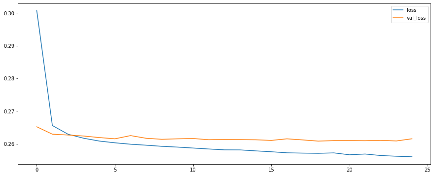We then proceeded to create predictions from our X_test set.
predictions = model.predict_classes(X_test)
from sklearn.metrics import classification_report,confusion_matrix
print(classification_report(y_test,predictions))
print('\n')
print(confusion_matrix(y_test,predictions))
Table 10
Classifcation Report
| precision | recall | f1-score | support | |
|---|---|---|---|---|
| 0 | 0.98 | 0.44 | 0.61 | 15658 |
| 1 | 0.88 | 1.00 | 0.93 | 63386 |
| accuracy | 0.89 | 79044 | ||
| macro avg | 0.93 | 0.72 | 0.77 | 79044 |
| weighted avg | 0.90 | 0.89 | 0.87 | 79044 |
Table 11
Confusion Matrix
| 6899 | 8759 |
| 150 | 63236 |
Here, accuracy represents the actual percent that our model correctly predicted. We have about a 90% accuracy. However, this is an unbalanced dataset, with much more loans being fully paid versus being charged off. If we had created a very simple model that predicted that any loan would be repaid, it would still be about 80% accurate. Our 89% accuracy is ok but not excellent. It presents only a 9% avantage over a simple model that predicts that all loans will be repaid. A better metric here is our model’s precision and recall, as well as the f1-score, which takes the harmonic mean of precision and recall. We see for example that our model is correctly predicting that a loan will be charged off 44% of the time.
It’s possible that our model could be improved by changing some of its parameters. We might try adding more neurons or layers, for example. We could also try more feature engineering. One column we could not use was employment title. It would be labor intensive, but it might be possible to feature engineer dummy variables if were could categorize job titles based on an estimated average salary. However, this would be very speculative and might not be the best option considering the amount of time it would likely require.
We created a model that is capable of predicting whether or not a person is likely to fully pay off a loan with 89% accuracy. While the model is less performant when predicting which loans will be charged off, it still performs better than other possible models (“all loans will be repaid”) or a random guess. This makes it a useful tool that could help the company in determing the risk profile of an individual. For this reason, it merits more exploration to see if it can be further developed to improve prediction accuracy.